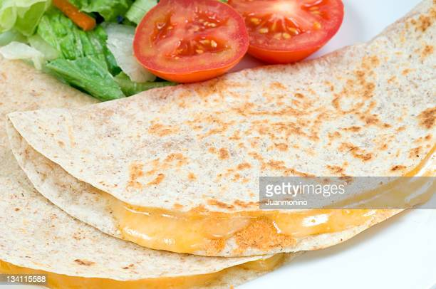

The Colby Quesadilla

Description
The Colby Quesadilla is an original creation born out of empty pantries and emptier pockets.
*There is a delicate balance to mastering this recipe. The ideal is speed, not craftmanship.
Ingredients
- White flour tortilla shells
- Shredded Colby-Jack cheese
Steps
- Place one tortilla shell on a microwave-safe plate.
- Sprinkle appropriate amount of cheese atop said tortilla shell.
- Gently drape a second tortilla shell atop your cheese mound (as one blankets their favorite child).
- Microwave on HIGH for ONE MINUTE. If your cheese is scorched, you did not put enough on. If your cheese is not yet melted, you put too much on. *See above description.
- Let cool and enjoy!